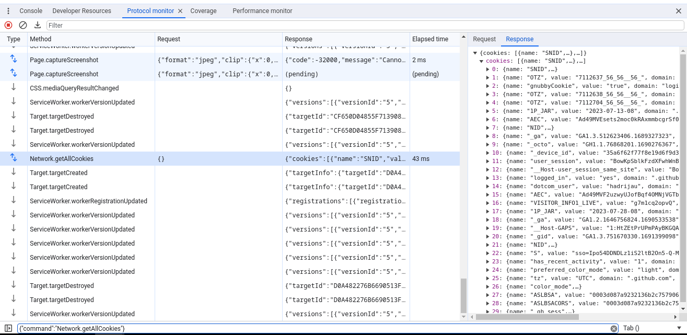
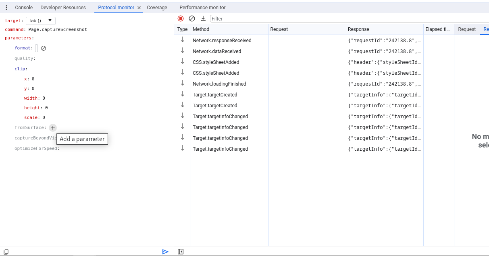

The Chrome DevTools Protocol (CDP) is a JSON-based protocol that connects debug and automation targets (such as browsing contexts and workers) with trusted debug and automation clients. It allows tools to instrument, inspect, debug, and profile Chromium, Chrome, and other Blink-based browsers.
Instrumentation is divided into domains (DOM, Debugger,
Network, etc.). Each domain defines supported commands and generated events.
Both commands and events are serialized JSON objects of a fixed structure.
CDP exposes a wide range of high-privilege capabilities, so protocol clients are assumed to be trusted. CDP is not a public or supported API for Chrome, and it does not guarantee backwards compatibility. Syntax and semantics may change without notice based on Chromium's requirements and Chrome's product needs.
Direct use of CDP by third-party applications is unsupported. We only support official Chrome products built on CDP:
Third-party tools that automate Chrome should use supported products such as Chrome DevTools for agents, Puppeteer, or ChromeDriver rather than connecting to CDP directly.
The latest (tip-of-tree) protocol — Tracks the latest protocol definitions in Chromium. It captures the full capabilities of the protocol, changes frequently, and can break at any time. Backwards compatibility is not guaranteed.
v8-inspector protocol — Enables debugging and profiling of Node.js applications.
stable protocol — A historical snapshot tagged at Chrome 64 that includes a smaller subset of protocol capabilities.
See the CDP contribution guidelines and backend overview and Getting Started with CDP. For supported browser automation, use Chrome DevTools for agents, Puppeteer, or ChromeDriver.
For questions and discussions, subscribe to the chrome-debugging-protocol mailing list.
Protocol Monitor helps you understand how the DevTools frontend uses the protocol. You can view all requests, responses, and events as they happen in the Protocol Monitor panel.

Click the gear icon in the top-right of DevTools to open Settings. Select Experiments on the left, turn on "Protocol Monitor", then close and reopen DevTools. Click the ⋮ menu icon, choose More tools, and select Protocol monitor.
You can also send commands from Protocol Monitor. If a command requires no parameters,
type it into the prompt at the bottom of the panel and press Enter (for example,
Page.captureScreenshot). If a command requires parameters, provide them as
JSON (for example, {"cmd":"Page.captureScreenshot","args":{"format": "jpeg"}}
).
Click the icon next to the command input to open the command editor. After you select a
CDP command, the editor generates a structured form from the protocol definitions so you
can edit parameters and inspect their documentation and types. Send the command by
clicking the send button or pressing Ctrl + Enter.

Alternatively, you can execute commands from the DevTools console. First,
open DevTools on DevTools, then
call Main.MainImpl.sendOverProtocol() in the inner console:
let Main = await import('./devtools-frontend/front_end/entrypoints/main/main.js'); // or './entrypoints/main/main.js' or './main/main.js' depending on the browser version
await Main.MainImpl.sendOverProtocol('Emulation.setDeviceMetricsOverride', {
mobile: true,
width: 412,
height: 732,
deviceScaleFactor: 2.625,
});
const data = await Main.MainImpl.sendOverProtocol("Page.captureScreenshot");
The
chrome.debugger
extension API exposes the CDP JSON message transport to Chrome extensions. Extensions must
request the
"debugger"
permission in their manifest.
Chrome supports chrome.debugger only on a best-effort basis for
developer-facing debugging extensions. This includes extensions that add a DevTools panel
with developer functionality. Non-debugger use cases and extensions aimed at end users
rather than developers are unsupported.
Because CDP exposes high-privilege capabilities, the backend enforces additional access
controls on chrome.debugger calls to prevent extensions from accessing the
file system or escaping the browser sandbox. As with direct CDP connections, protocol
commands and events may change without notice.
TL;DR: No. CDP is not a public or supported API, and we do not guarantee backwards compatibility.
While direct use by third parties has been tolerated, it is unsupported and may break without notice when protocol syntax or semantics change. Third-party tools that automate Chrome should connect indirectly through supported products such as Chrome DevTools for agents, Puppeteer, or ChromeDriver.
TL;DR: We only accept changes motivated by our supported products, security improvements, removal of outdated functionality, or Chrome architectural changes.
Changes to CDP must be approved by CDP owners, meet high technical design standards, and serve web developer debugging or testing use cases. Only in exceptional cases do we accept additions to automate Chrome's UI. See the contribution guidelines for details.
The canonical protocol definitions live in the Chromium and V8 source trees (browser_protocol.pdl and js_protocol.pdl) and are maintained by the DevTools team. These declarative definitions generate C++ bindings in Chromium for Chrome DevTools and Chrome Headless.
The canonical .pdl files are mirrored in the
devtools-protocol
GitHub repository, which generates JSON schemas, TypeScript definitions, and Closure
typedefs and publishes them
to npm.
When Chrome runs with --remote-debugging-port=9222, the protocol schema for
that browser build is also served at localhost:9222/json/protocol.
The endpoint is exposed as webSocketDebuggerUrl in
/json/version. Note the browser path segment in the URL rather
than page. When Chrome launches with --remote-debugging-port=0,
it writes the selected port and browser target path to stderr and to the
DevToolsActivePort file in the profile directory.
TL;DR: Yes. Chrome 63 introduced support for multiple simultaneous clients.
When a session is disconnected, the client receives an
Inspector.detached event with the disconnection reason, for example:
{"method":"Inspector.detached","params":{"reason":"target_closed"}}.
When Chromium or Chrome launches with
--remote-debugging-port=<port> (for example,
--remote-debugging-port=9222), it starts a local HTTP server that exposes
REST endpoints and WebSocket connections for target discovery, lifecycle management, and
CDP communication.
| Endpoint | Method | Description |
|---|---|---|
/json/version |
GET | Browser version metadata and browser-level WebSocket URL |
/json or /json/list |
GET | List of inspectable targets (pages, workers, tabs) |
/json/new?{url} |
PUT | Create a new page or tab target (strictly requires PUT) |
/json/activate/{targetId} |
GET | Bring a target page or tab to the foreground |
/json/close/{targetId} |
GET | Close the specified target |
/json/protocol |
GET | Full DevTools Protocol JSON schema |
/devtools/browser/{guid} |
WS | Root browser-level WebSocket connection |
/devtools/page/{targetId} |
WS | Target-specific WebSocket connection |
/json/version
#
Returns browser version metadata, engine versions, and the browser-level WebSocket debugging URL.
| Field | Type | Description |
|---|---|---|
Browser |
string |
Product name and version (e.g. Chrome/135.0.7012.0 or
HeadlessChrome/...)
|
Protocol-Version |
string | Current supported protocol version (e.g. 1.3) |
User-Agent |
string | Default browser User-Agent header string |
V8-Version |
string | V8 JavaScript engine version |
WebKit-Version |
string | WebKit / Blink version and Git revision hash |
webSocketDebuggerUrl |
string | WebSocket URL to attach to the root browser target (contains an unguessable UUID on desktop) |
Android-Package |
string | Host Android package ID (present on Android only) |
{
"Browser": "Chrome/135.0.7012.0",
"Protocol-Version": "1.3",
"User-Agent": "Mozilla/5.0 (Macintosh; Intel Mac OS X 10_15_7) AppleWebKit/537.36 (KHTML, like Gecko) Chrome/135.0.0.0 Safari/537.36",
"V8-Version": "13.5.100",
"WebKit-Version": "537.36 (@a1b2c3d4e5f60718293a4b5c6d7e8f9012345678)",
"webSocketDebuggerUrl": "ws://localhost:9222/devtools/browser/6b539824-7489-4a9c-9c02-4ec4dc1373ea"
}
/json or
/json/list
#
Returns an array of target descriptors for all inspectable contexts (pages, background pages, service workers, shared workers). Targets are sorted in descending order by last activity time.
Query parameters:
for_tab (optional flag): When present (e.g.
/json/list?for_tab), targets of type tab are included in the
results. When omitted, only frame targets are returned, and tab targets are
filtered out.
[
{
"description": "",
"devtoolsFrontendUrl": "https://chrome-devtools-frontend.appspot.com/serve_rev/@a1b2c3d4/inspector.html?ws=localhost:9222/devtools/page/D598C123456789ABCDEF0123456789AB",
"faviconUrl": "https://example.com/favicon.ico",
"id": "D598C123456789ABCDEF0123456789AB",
"title": "Example Domain",
"type": "page",
"url": "https://example.com/",
"webSocketDebuggerUrl": "ws://localhost:9222/devtools/page/D598C123456789ABCDEF0123456789AB"
}
]
/json/new or
PUT /json/new?{url}
#
Creates a new browsing context (page or tab) navigated to the specified URL and returns its target descriptor.
Method requirement: This endpoint
strictly requires the PUT method. Calling it with
GET, POST, or any other verb fails with
405 Method Not Allowed ("Using unsafe HTTP verb GET to invoke /json/new. This action supports only PUT
verb.").
Query parameters:
& is parsed and URL-unescaped as the
initial navigation URL (e.g. PUT /json/new?https%3A%2F%2Fexample.com). If
omitted or invalid, it defaults to about:blank.
&for_tab flag to create a tab target instead of an
isolated frame.
/json/activate/{targetId}
#
Brings the specified target tab or window to the foreground.
200 OK: "Target activated"404 Not Found: "No such target id: {targetId}"500 Internal Server Error:
"Could not activate target id: {targetId}"
/json/close/{targetId}
#
Closes the specified target page.
200 OK: "Target is closing"404 Not Found: "No such target id: {targetId}"500 Internal Server Error:
"Could not close target id: {targetId}"
/json/protocol
#
Returns the complete Chrome DevTools Protocol JSON schema containing all domains, methods, events, and type definitions.
The JSON object structure returned in target lists (/json/list) and new
target creation (/json/new):
| Field | Type | Presence | Description |
|---|---|---|---|
id |
string | Required | Unique target identifier (UUIDv4) |
parentId |
string | Optional | Target ID of the parent context (omitted for top-level pages) |
type |
string | Required | Target classification string (see table below) |
title |
string | Required | Document title or worker label (HTML-escaped) |
description |
string | Required | Human-readable target description (may be empty string) |
url |
string | Required | Current URL loaded in the target |
faviconUrl |
string | Optional | Favicon URL (omitted if not present or invalid) |
webSocketDebuggerUrl |
string | Required | WebSocket URL for CDP clients to attach to this target |
devtoolsFrontendUrl |
string | Required | Complete URL to launch the hosted DevTools web inspector for this target |
type Value |
Description |
|---|---|
"page" |
Primary top-level web page or tab frame |
"tab" |
Tab target container (parent of all subframes and prerendered pages in a WebContents) |
"iframe" |
Out-of-process subframe or iframe |
"worker" |
Dedicated Web Worker (new Worker()) |
"shared_worker" |
Shared Web Worker (new SharedWorker()) |
"service_worker" |
Service Worker registration execution context |
"worklet" |
Generic Worklet (Paint, Audio, Layout) |
"auction_worklet" |
Protected Audience (FLEDGE) Auction Worklet |
"browser" |
Browser-wide process target |
"webview" |
Guest view or <webview> content |
"background_page" |
Chrome Extension background page or offscreen document |
"app" |
Packaged app, platform app, or Isolated Web App (IWA) |
"browser_ui" |
Internal Chrome WebUI window or contents |
"other" |
Fallback classification for other inspectable targets |
/devtools/page/{targetId} & /devtools/browser/{guid}
#
Clients communicate with the DevTools Protocol over full-duplex WebSocket connections.
/devtools/page/{targetId}): Attaches
directly to a single target session. If the target crashes or is closed, the server
emits an unprompted CDP notification before closing the socket:
{"method":"Inspector.detached","params":{"reason":"target_closed"}}
/devtools/browser/{guid}): Attaches to
the root browser session, enabling target auto-discovery, multi-target attachment via
Target.attachToTarget, and browser-wide management. On desktop Chrome, the
path contains an unguessable UUIDv4 written to the DevToolsActivePort file
in the user data profile directory.
/devtools/inspector.html
#
Legacy endpoint serving the bundled DevTools frontend. In modern Chrome, inspect targets
using the remote frontend URL provided in target descriptors (devtoolsFrontendUrl).
Host header. It must either be an IP address
(e.g. 127.0.0.1, [::1]) or localhost. Other
hostnames trigger an immediate 500 Internal Server Error ("Host header is specified and is not an IP address or localhost.").
--remote-allow-origins):
When a WebSocket handshake includes an Origin header (such as from a web
page), the origin must match the origins specified via
--remote-allow-origins=<origin> (or
--remote-allow-origins=*). Non-matching origins receive
403 Forbidden. Requests without an Origin header (such as CLI
tools, Puppeteer, Node.js) are allowed by default.
Access-Control-Allow-Origin response headers, ensuring the browser
Same-Origin Policy prevents arbitrary websites from reading target lists or metadata via
fetch() or XMLHttpRequest.
/json/* endpoints emit
Content-Security-Policy: frame-ancestors 'none', and the discovery page
(/) emits X-Frame-Options: DENY.